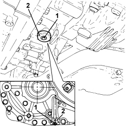
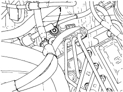

0010T44 CHANGE AUTOMATIC TRANSMISSION FLUIDS
- Path
- Procedures > 00 MAINTENANCE > 0010 NEW VEHICLES AND MAINTENANCE > 0010T VEHICLE FLUIDS > 0010T44 CHANGE AUTOMATIC TRANSMISSION FLUIDS
- Kind
- repair procedure (removal / refitting; the operation number is the code)
- Applies to
- engines: 3.2 JTS; all production periods
- Interactive page
- https://sloeber94.github.io/elrnDB-aBrrSpdr/en/#/946004257
Applies to: engines: 3.2 JTS; all production periods
- Position the vehicle on a lift.
Op. 7055B54 UNDER ENGINE PROTECTION/GUARD - R.R.
1. Unscrew the automatic transmission fluid level check plug with its o-ring.
2. Unscrew the automatic transmission fluid drain plug with its seal.

Applies to: engines: 3.2 JTS; all production periods
- Retighten the automatic transmission fluid drain plug with its seal to the specified torque.
Component | Fastening | dia | Value (daNm) | Validity |
|---|---|---|---|---|
Automatic transmission fluid drain plug | - | - | 5.5 | 3.2 JTS CAE |
Applies to: engines: 3.2 JTS; all production periods
1. Unscrew the automatic transmission fluid filler plug and remove.

Applies to: engines: 3.2 JTS; all production periods
- Add 200 g more of the the specified fluid than was removed to the filler opening.
Component | Type | Description | Classification | Qty. | Validity |
|---|---|---|---|---|---|
Automatic transmission (6 speed) - for replacing gearbox taken from PARTS DEPT. | Oil [kg] | TUTELA GI/VI | - | 2.425 | 3.2 JTS CAE |
Component | Type | Description | Classification | Qty. | Validity |
|---|---|---|---|---|---|
Automatic transmission (6 speed) - for changing oil during SERVICE | Oil [kg] | TUTELA GI/VI | - | 3.320 | 3.2 JTS CAE |
Component | Type | Description | Classification | Qty. | Validity |
|---|---|---|---|---|---|
Automatic transmission (6 speed) - for total refilling (gearbox opening) | Oil [kg] | TUTELA GI/VI | - | 6.110 | 3.2 JTS CAE |
- Tighten the automatic transmission fluid drain plug to the recommended torque.
Component | Fastening | dia | Value (daNm) | Validity |
|---|---|---|---|---|
Automatic transmission fluid supply plug | - | - | 2.4 ÷ 3.6 | 3.2 JTS CAE |
- Check the automatic transmission fluid level as described in:
Op. 0010T45 AUTOMATIC TRANSMISSION FLUID CHECK LEVEL AND TOP UP IF NECESSARY
Topics linked from this page (2)
- 0010T45 AUTOMATIC TRANSMISSION FLUID CHECK LEVEL AND TOP UP IF NECESSARY
- 7055B54 UNDER ENGINE PROTECTION/GUARD - R.R.
Topics that link to this page (6)
- 1004B14 POWER UNIT WITH AUTOMATIC TRANSMISSION R + R
- 2130B36 AUTOMATIC TRANMISSION VALVE COVER R R
- 2130B37 OIL INLET COVER ON AUTOMATIC TRANSMISSION VALVE ASSEMBLY
- 2130B40 GEAR SELECTION SOLENOID UNIT - R R
- 2130B69 AUTOMATIC TRANSMISSION ENGINE BRAKE ON/OFF SOLENOID VALVES - R.R.
- 2135B58 ELECTRONIC AUTOMATIC TRANSMISSION SYSTEM WIRING - R.R.